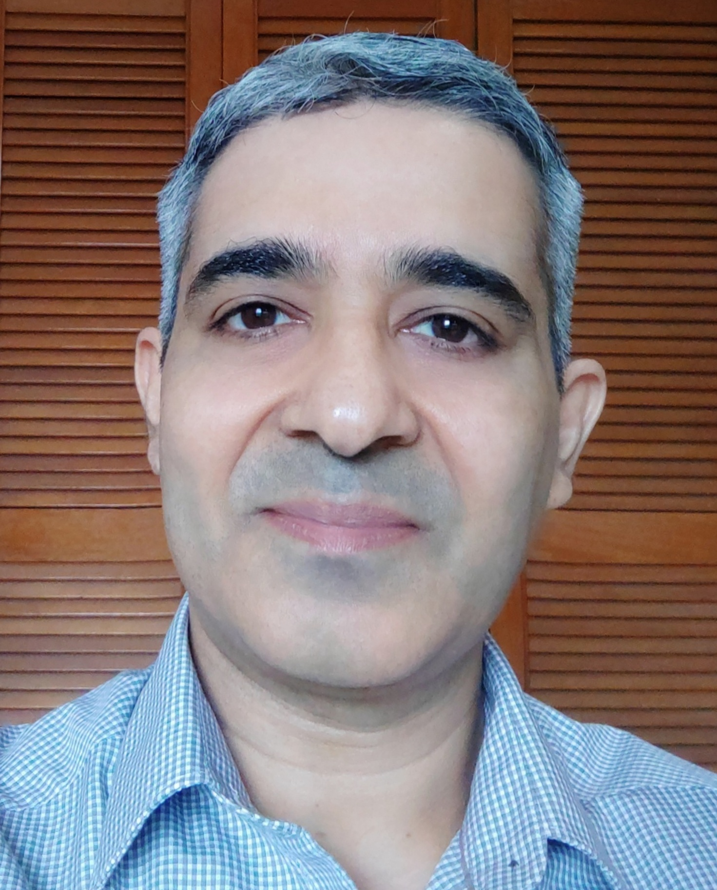

|
Anshoo Tandon

Hi, I am Anshoo Tandon, currently the Director of Research at CDPG (FSID, IISc Bangalore). I have extensive research experience in broad areas of signal processing, information theory and coding theory, and have worked in lead/senior roles in semiconductor companies such as Broadcom, ARM, Freescale Semiconductor (merged with NXP), and Analog Devices, on the design and implementation of efficient and optimized transceiver algorithms for cellular and wireless connectivity solutions.
I received my Ph.D. degree from the National University of Singapore, the M.E. degree from the Indian Institute of Science, Bangalore, India, and the B.E. degree from Kumaun University, Nainital, India.
My current research focus is on differential privacy, privacy preserving computing, and statistical signal processing. Please see my publication list for details.
Email: anshoo.tandon@gmail.com.
|